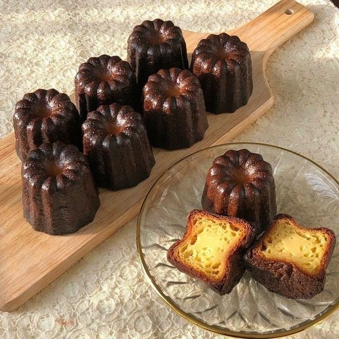

정식 명칭은 "카늘레 드 보르도(Canelés de Bordeaux)"이다. 이 중 카늘레(canelé)는 프랑스어로 "세로 홈을 판, 주름을 잡은, 골이 진"이란 뜻으로, 독특하게 생긴 카늘레 전용 틀을 가리킨다. 프랑스의 보르도 지방의 아농시아드 수도원에서 18세기경에 만들기 시작했다. 잘 알려지지 않은 사실이지만 까눌레는 포도주 생산의 부산물로 생겨난 디저트이다. 보르도에서는 생산한 와인 내 불순물 제거를 할 때 점액질인 계란 흰자를 풀어 흡착시키는 과정을 거쳤는데, 이 때문에 자연스레 노른자만 남았다. 이 노른자를 버리기 아까워서 근처 수도원의 수녀들이 수거해 만든 것이 카늘레이다.
과자의 아이덴티티인 전용 황동틀 안쪽에 밀랍을 코팅하여 만들어져서 겉은 바삭하고 속이 촉촉한 맛이 특징리다. 이 바삭한 질감은 보관을 웬만큼 잘해도 결국 사라져서 물렁거리거나 질겨지기 때문에 먹는 타이밍도 중요하다. 틀이 비싸고, 만들기가 까다롭기 때문에 한 개당 가격은 마카롱만큼 꽤 나간다.